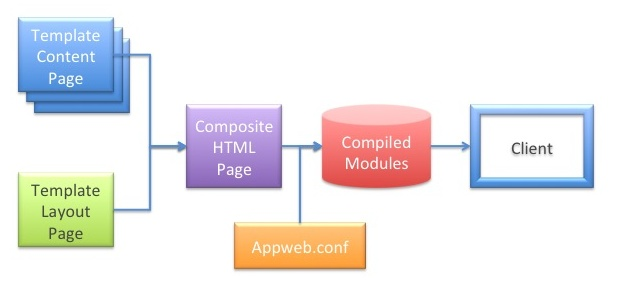

Highly usable applications have consistent structure, menus and appearance so the user can easily navigate that application. Such applications may consist of many web pages that share a common look and feel. However, designing and maintaining that consistency is sometimes a challenge.
ESP uses the Expansive tool to provide a powerful and flexible solution for implementing a consistent UI via layout pages. Layouts pages define the look and feel of an application while content pages provide page specific content. HTML pages are then rendered to clients by merging content pages with one or more layout pages. This creates a composite page for what the user will actually see. In this way, a web application can easily maintain a consistent look and feel without repeating boilerplate code from page to page. ESP believes strongly in the DRY principle: "Don't Repeat Yourself".
For example: consider the layout page below named "layouts/default.esp". This will will define the top level HTML layout page for content pages. It has a banner image and division tags that structure the page:
<html>
<body>
<div class="top">
<img src="banner.jpg" />
</div>
<div class="content">
<@ content @>
</div>
</body>
</html>
Modifications to this page, will be reflected automatically in all content pages.
A content page defines only the HTML and code that is unique for a specific page. It is merged with a layout page by inserting the content and replacing the <@ content @> tag in the layout page before rendering to the client.
For example, consider the content page named "demo-index.esp":
<h1>Content Page</h1> <p>Hello World</p>
This would render a composite web page back to the user:
<html>
<body>
<div class="top">
<img src="banner.jpg" />
</div>
<div class="content">
<h1>Content Page</h1>
<p>Hello World</p>
</div>
</body>
</html>
Note that the blending of layout and content page happens only once and the result is save under the "documents" directory. For more information, read the Expansive Documentation.
Sometimes you need to just include some arbitrary HTML file at any point in a page. Use the include directive at any point in the page you wish to include another file. For example:
<%@ include "common/header.html" %>======
The ESP pipeline processes ESP pages to generate client responses. The process begins with with an HTML page which typically, though not always, contains embedded C code. This is parsed by the ESP Template Engine and combined with layout pages to create a single composite web page. This is then converted to pure C code that is compiled, linked and saved as a native-code shared library. The library is loaded and the code run whenever a client request is received for that page. If the web page or template is modified, the pipeline recompiles the page and regenerates the code library.
This entire pipeline process happens transparently in the background with only a momentary pause in processing. For production, you can pre-compile web pages so that a compiler is not required on the target.
Layout pages allow you to define the "look and feel" of the user interface and specify the standard elements of all web pages in one place. ESP pages reuse the "look and feel" by simply referencing a layout page.
The layout page is structurally just an ESP Page that typically contains the top level HTML structure, style sheets and graphic content to be included on every page. It may contain embedded C code, and most importantly, it specifies the location to insert content from content pages.
The ESP content pages supply the content and data that is unique to that page. Content pages do not replicate the layout and look and feel that is specified in the layout page. In this way, changing the layout page in once place will automatically change every web page in the application.
Here is a simple layout page:
<html>
<body>
<img src="banner.jpg">
<%@ content %>
</body>
</html>
The <%@ content %> directive instructs the Template Engine to insert the content page at this location.
Here is a simple content page. Note that this is missing the <html> and <body> tags:
<h1>Hello World</h1> <p>Today is <%= mprGetDate(0) %>
ESP pages are not required to use layout pages. To specify that no layout page is required, use an empty layout directive in the content page. For example:
<%@ layout "" %>
By default, stand-alone ESP pages do not use a layout page, whereas ESP view pages in an MVC application do.
The <%@ layout "file" %> directive specifies the name of the layout page. By using this directive in layout pages, you can build up the web page layout by nesting layout pages. If omitted in content pages, which is usually the case, the default layout of layouts/default.esp will be used. If omitted in layout pages, it is assumed the layout page is the top level layout page.
The template engine additionally supports the following web page directive in layout pages:
<%@ content %>
This specifies the location for the content page data.
Note: you do not have to use layout pages. Simple stand-alone web pages without layouts code are supported. To disable use of a layout page, use a <%@ layout="" %> directive.